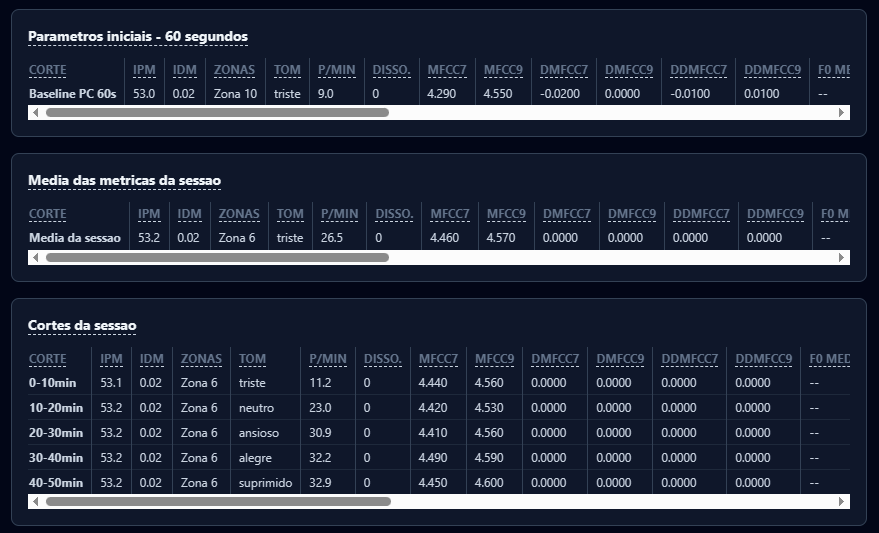
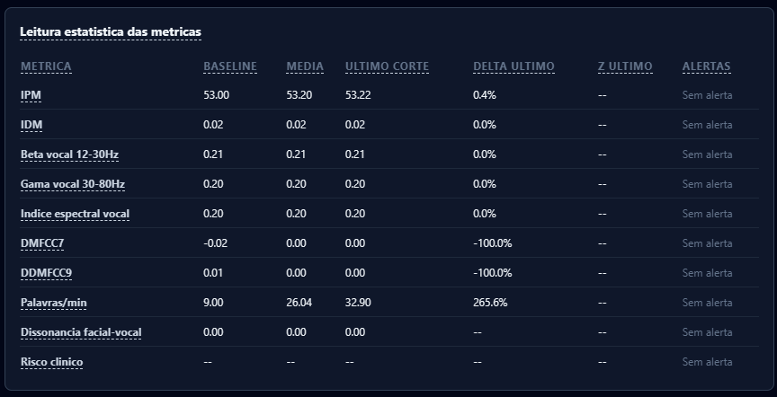

Voz · intervalo ilustrativo
IPM: magnitud de desvío acústico disponible.
IDM: dirección media positiva en este ejemplo.
Doce bandas: distribución de energía, sin etiquetas emocionales.
FROID Psique / Demostración editorial
Como dos pistas de una partitura, los canales comparten el tiempo, pero no dicen lo mismo. La proximidad temporal no comprueba conflicto ni causalidad.
IPM: magnitud de desvío acústico disponible.
IDM: dirección media positiva en este ejemplo.
Doce bandas: distribución de energía, sin etiquetas emocionales.
Familia: sonrisa.
Variante: participación de AU6 no apurada.
Estado: recurrencia en cuadros distintos; no es confirmación de autenticidad ni de sentimiento.
Repetir el mismo cuadro almacenado no cuenta como una nueva observación. La variante debe reaparecer en cuadros distintos.
Las lecturas vencidas dejan de representar el presente. El evento anterior permanece en el historial; la condición actual informa ausencia de apuración.
El registro facial puede continuar. Cada canal informa su capacidad; el índice vocal no se rellena con cero.
El registro preserva el origen y el estado de la información. La pregunta útil no es “¿qué emoción se comprobó?”, sino “¿qué se observó, en qué condiciones y en qué contexto de la conversación?”.
Toda sesión comienza con 60 segundos de calibración. En ese intervalo el sistema establece la media y la variabilidad de la frecuencia fundamental del paciente en reposo, mapea el perfil de ruido del ambiente y del micrófono, y fija los valores de referencia que se usarán en todas las comparaciones de esa sesión.
La sesión se divide en cortes, y provienen de tres orígenes. El automático se cierra cada 10 minutos. El manual es suyo, mediante el botón sobre el video o con Ctrl + Espacio, y solo se acepta a partir de 10 segundos desde el corte anterior. El de cierre cierra lo que quedó cuando la sesión termina: existe porque, sin él, los últimos minutos se perdían.



Capturas de la aplicación. La página de esta demostración, a diferencia de ellas, es un ejemplo sintético: no ejecuta el algoritmo ni muestra a un paciente real. Haga clic en la imagen para ampliarla.